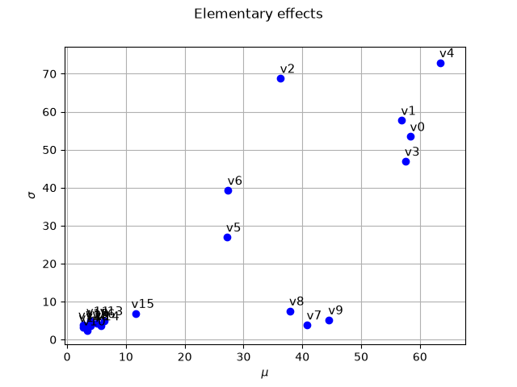

Note
Go to the end to download the full example code.
Example 1: Morris use-case and p-level input grid¶
To define the trajectories, we suppose that the box ![[0,1]^{20}]() is split into a p-level grid (p=5).
We set the number of trajectories input variables are randomly to 10.
is split into a p-level grid (p=5).
We set the number of trajectories input variables are randomly to 10.
import openturns as ot
import openturns.viewer as otv
import otmorris
use the reference 20-d function from the Morris paper
f = ot.Function(otmorris.MorrisFunction())
dim = f.getInputDimension()
Number of trajectories
r = 10
Define experiments in [0,1]^20 p-levels
p = 5
morris_experiment = otmorris.MorrisExperimentGrid([p] * dim, r)
bounds = ot.Interval(dim) # [0,1]^d
X = morris_experiment.generate()
Y = f(X)
Evaluate Elementary effects (ee)
morris = otmorris.Morris(X, Y, bounds)
Compute mu/sigma
